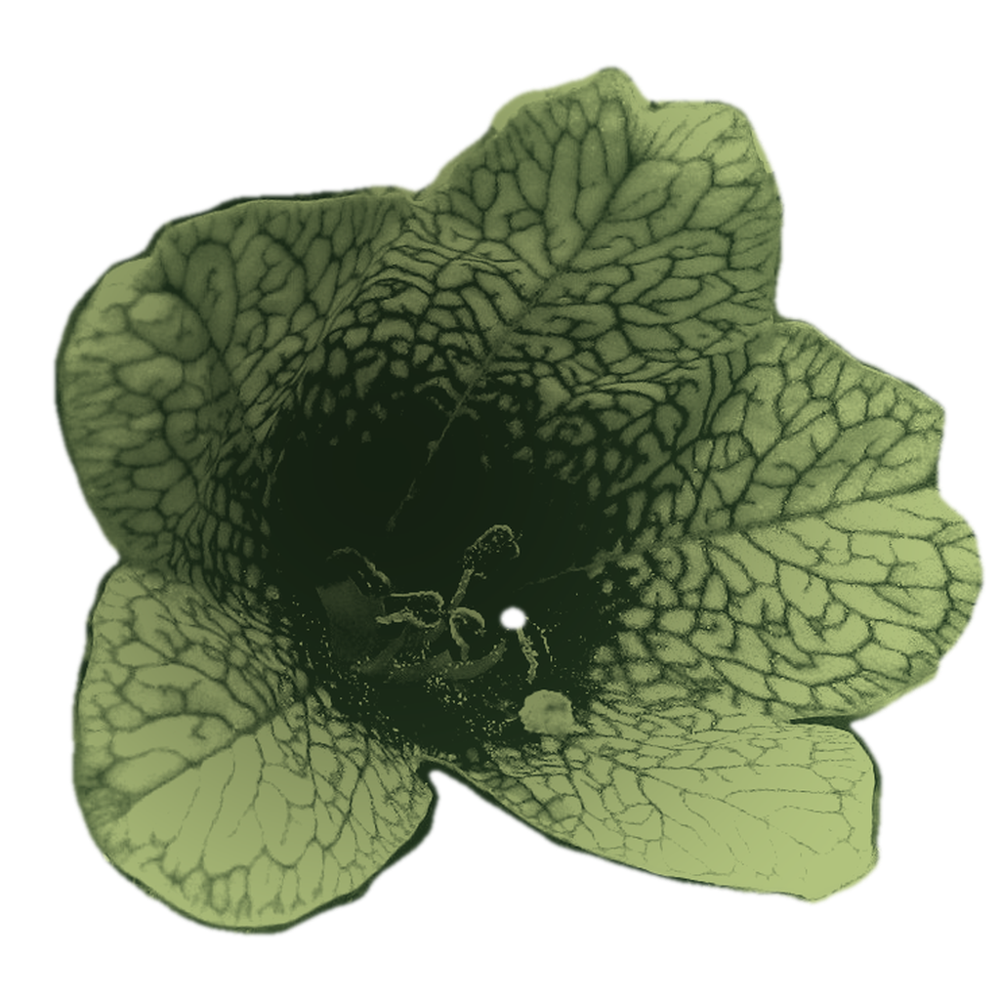
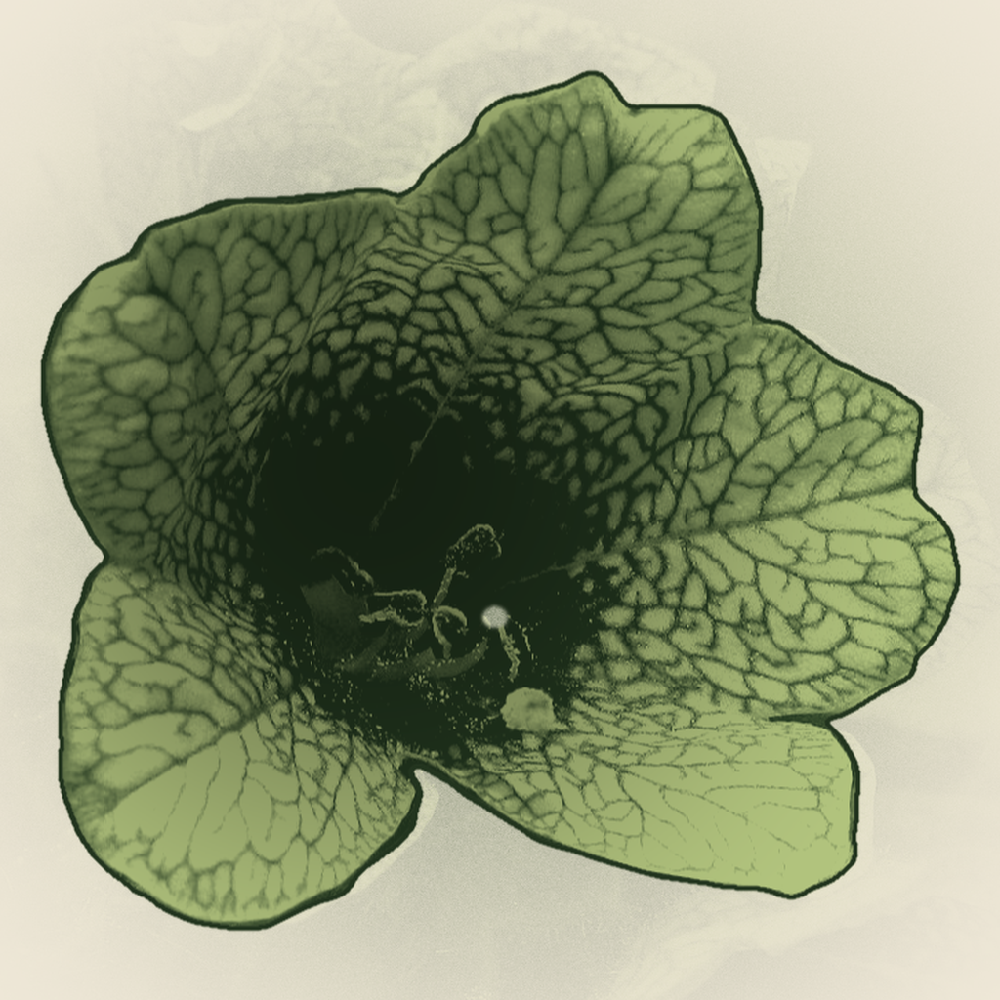
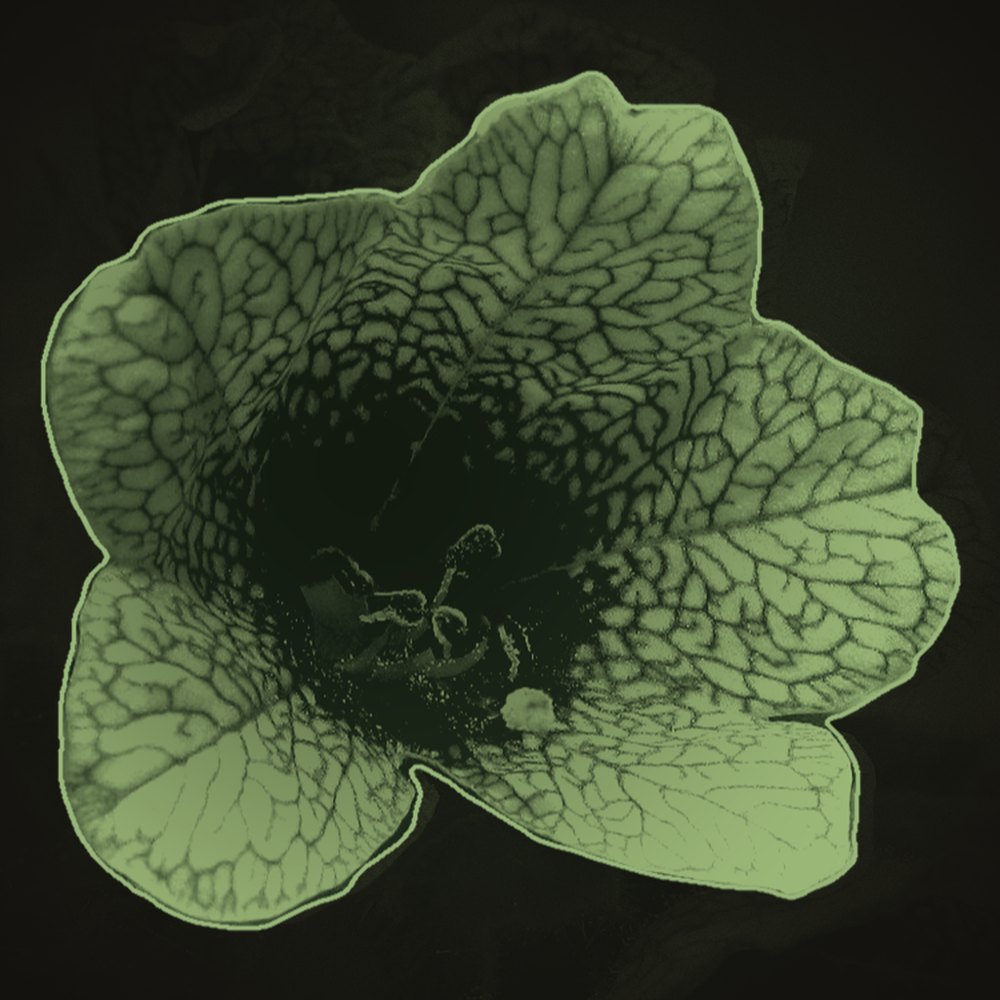

128



The flower is a detailed mark — it sings at 48px+ and in a lockup, but any photo-derived bloom turns to mush at 16px. For a real favicon that reads at 16/32, the usual move is a separate simplified glyph (a bold 3–5-lobe silhouette drawn from this flower), while this detailed mark stays the primary logo. Want me to draw that tiny companion glyph?